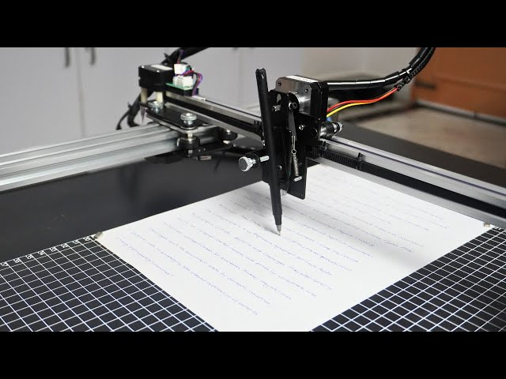

Projects
Deloitte Digital Salesforce Academy, Salesforce Career Journey
- Selected for 6-week Salesforce introduction class, gained hands-on experience in Salesforce by participating in Trailhead competition
- Attended 3 different virtual seminars, learned career tips from Deloitte Salesforce Consultants, explored Career paths in Salesforce
2-Dimensional Plotter Project
- Collaborated with a team of 5 other Computer/Electrical Engineering Students to develop a 2D plotter from scratch which included free drawing etch-a-sketch mode, automatic and manual calibration modes, and automated mathematical function mode
- Wrote and tested Python code to achieve required functionality by interfacing Raspberry Pi 4 with rotary encoder and limit switch inputs, LCD screen UI display output, and PWM signal outputs to electrical circuit which drove stepper motors
Graphical User Interface Project
- Wrote program that constructed a graphical user interface which recreated the popular video game Snake
- Used knowledge of Javafx, object oriented programming, threads, functional interfaces, and custom component construction